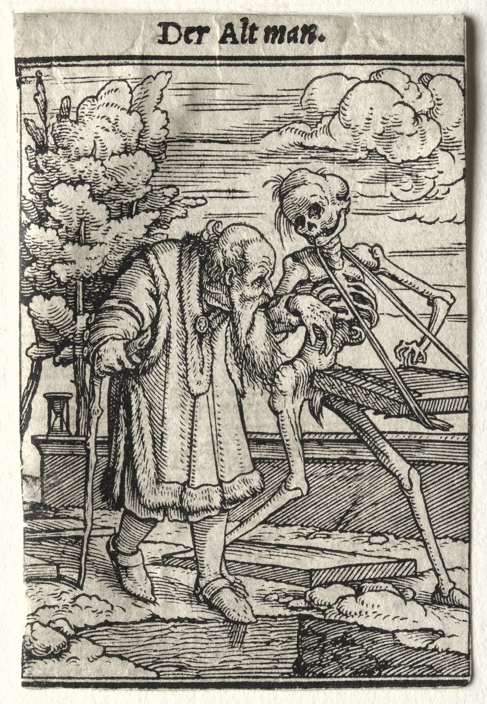

Ecclesiastes 12 — The Mister Translation

Ecclesiastes 12:1–7. Holbein’s old man is bent, as verse 3’s strong men are, and the grave is open in front of him; the hourglass and the skeleton with its instrument are Holbein’s. The Hebrew has no skeleton and no grave: it has a house, a mill, an almond tree and a cord, and says only that man goes to his everlasting house and the mourners go about the street. The picture takes the old reading of the chapter, the body of an old man, and puts Death beside him.

Translator's Notes — verse by verse
⭐ Remember your Creator. “And remember your Creator” stands in this one verse, zakhor, the imperative, with bor’ekha, whose ending is plural, as the ending of Elohim is. The first sentence of the chapter is the last of an address that begins at “Rejoice, young man, in your childhood”, which stands in this one verse, Ecclesiastes 11:9. The KJV has “Remember now thy Creator in the days of thy youth”, the ASV “Remember also thy Creator”, the NIV “Remember your Creator in the days of your youth”, the NWT 1984 “Remember, now, your Grand Creator in the days of your young manhood” and the TLB “Don’t let the excitement of being young cause you to forget about your Creator”. The NWT 1984 alone prints the plural’s weight, with “Grand”. ⚠ The letters of bor’ekha hold the word bor, a cistern or pit, which is the last word of verse 6 with the article, ha-bor; whether the book plays on that, the text does not say.
⭐ The evil days, and no delight. “The days of evil” stands in this one verse, and “I have no delight in them” stands in this one verse. The noun is chefets, and it comes back at verse 10, where Qohelet seeks “words of delight”, which stands in this one verse: the years that have no chefets in them, and the words that have. The same word is the “purpose” of Ecclesiastes 3:1 (now on these pages). The KJV has “while the evil days come not” and “I have no pleasure in them”, the NIV “before the days of trouble come” and “I find no pleasure in them”, the NWT 1984 “before the calamitous days proceed to come” and “I have no delight in them”, the Douay “before the time of affliction come” and “They please me not” and the TLB “before the evil years come”.
⭐ The lights go out, and the clouds return. “the sun is darkened” stands in two verses: Isaiah 13:10, of the day of Jehovah, and here. And “and the clouds return” stands in this one verse; the verb is shuv, which comes back twice in verse 7, of the dust and the breath: the clouds, the dust and the breath all go back. The KJV has “While the sun, or the light, or the moon, or the stars, be not darkened, nor the clouds return after the rain”, the NIV “before the sun and the light and the moon and the stars grow dark, and the clouds return after the rain”, the NWT 1984 “and the clouds have returned, afterward the downpour”, the Geneva “While the sun is not dark” and the TLB “no silver lining left among your clouds”.
⚠ A house, and a reading of it. “The keepers of the house” stands in this one verse, and “the grinding women”, the feminine ha-tochanot, stands in this one verse; “the men of strength” stands in two verses, here and 2 Kings 24:16; and “the daughters of song” stands in this one verse. The Hebrew names no part of a body. The old reading takes the figures as an old person’s body, the keepers as the arms, the strong men as the legs, the grinders as the teeth, those at the windows as the eyes, and the TLB prints it so: “your strong legs will become weak, and your teeth will be too few to do their work, and there will be blindness too”; “you yourself will be deaf and tuneless”; “a white-haired, withered old man, dragging himself along”. The others keep the figures. A second reading takes them as a house and a village going dark, ending in a funeral, which is where verse 5 ends. This translation prints the figures and leaves the reading to the reader. The KJV has “the keepers of the house shall tremble, and the strong men shall bow themselves, and the grinders cease because they are few, and those that look out of the windows be darkened”, the NIV “the grinders cease because they are few, and those looking through the windows grow dim”, the NWT 1984 “the grinding women have quit working because they have become few, and the ladies seeing at the windows have found it dark” and the Douay “the grinders shall be idle in a small number, and they that look through the holes shall be darkened”. The windows are arubbot, the word of “the windows of heaven” (Malachi 3:10, now on these pages).
⭐ The doors, the mill, and the bird. The doors are shut and the sound of the mill is low; “and one rises at the voice of a bird” stands in this one verse. The KJV has “when the sound of the grinding is low, and he shall rise up at the voice of the bird, and all the daughters of musick shall be brought low”, the NIV “the sound of grinding fades”, the NWT 1984 “all the daughters of song sound low”, the Douay “all the daughters of music shall grow deaf” and the TLB “you will waken at dawn with the first note of the birds”.
⭐ Four words that stand once. “and terrors in the way” stands in this one verse, chatchatim; “drags itself along”, yistabbel, stands in this one verse; “the caper berry”, ha-aviyyonah, stands in this one verse (aviyyonah); and “his everlasting house”, beit olamo, stands in this one verse (olam). The almond is shaqed and the grasshopper chagav. The versions disagree on the caper berry: the KJV has “desire shall fail”, the ASV “desire shall fail”, the NIV “desire no longer is stirred”, the Geneva “concupiscence shall be driven away”, the NWT 1984 “the caper berry bursts” and the Douay “the caper tree shall be destroyed”. For the grasshopper the KJV has “shall be a burden”, the NWT 1984 “drags itself along” and the Douay “the locust shall be made fat”. For the home, the KJV has “his long home”, the ASV “his everlasting home”, the NIV “eternal home”, the NWT 1984 “long-lasting house”, the Geneva “the house of his age” and the Douay “the house of his eternity”. And for the terrors, the KJV has “fears shall be in the way”, the ASV “terrors shall be in the way” and the NIV “dangers in the streets”. The mourners, ha-sofedim, stand in this one verse.
⭐ Four things broken. “The silver cord” stands in this one verse, “the golden bowl” stands in this one verse, and “the fountain”, ha-mabbua, stands in this one verse; the wheel goes to ha-bor, the cistern (bor). The first verb is a ketiv/qere pair, written yirchaq and read yeratek, and the read form stands in this one verse. The Hebrew column keeps both. The shelf is divided on what is done to the cord: the KJV has “Or ever the silver cord be loosed, or the golden bowl be broken, or the pitcher be broken at the fountain, or the wheel broken at the cistern”, the NIV “before the silver cord is severed, and the golden bowl is broken”, the NWT 1984 “before the silver cord is removed, and the golden bowl gets crushed”, the Geneva “While the silver cord is not lengthened, nor the golden ewer broken”, the Douay “Before the silver cord be broken, and the golden fillet shrink back” and the TLB “before the silver cord of life snaps and the gold bowl is broken”. This translation prints “snapped” and leaves the verb as an open question.
⭐ Dust and breath. “And the dust returns” stands in this one verse, “as it was” stands in this one verse, and the sentence takes apart what Genesis put together. In Genesis 2:7 (now on these pages) the human is formed from the dust and given the breath of life; in Genesis 3:19 (now on these pages) the sentence is “to dust you shall return”, which stands in this one verse. Here each part goes back to where it came from: “and the breath returns” stands in this one verse, “to God who gave it” stands in this one verse. The word is ruach, which this translation prints “breath” at Ecclesiastes 3:19–21 (now on these pages) rather than split into “spirit” and “breath”, and keeps here. There, at 3:21, it is a question, “Who knows — the breath of the sons of man, the one going up, upward?”, and here it is said flatly. The KJV has “Then shall the dust return to the earth as it was: and the spirit shall return unto God who gave it”, the NWT 1984 “the spirit itself returns to the [true] God who gave it”, the Douay “the dust return into its earth, from whence it was” and the TLB “then the dust returns to the earth as it was, and the spirit returns to God who gave it”; the NWT 1984 prints “the [true] God” for ha-Elohim, “the God”, with the article.
⭐ The frame closes. “Vapor of vapors” stands in two verses: the opening of the book, Ecclesiastes 1:2 (now on these pages), and this one. “All is vapor” stands in six verses: 1:2, 1:14 (now on these pages), 2:11, 2:17, 3:19 (now on these pages) and this one (hevel). At 1:2 the book says it twice, “vapor of vapors, said Qohelet, vapor of vapors, all is vapor”; here the first half is said once. And “said the Qohelet”, with the article and the name spelled with a vav, stands in this one verse, where the opening has “said Qohelet”, which stands in this one verse. The KJV has “Vanity of vanities, saith the preacher; all is vanity”, the NIV “Meaningless! Meaningless!” and “says the Teacher”, the NWT 1984 “The greatest vanity!” and “said the congregator”, the Douay “Vanity of vanities, said Ecclesiastes” and the TLB “All is futile, says the Preacher; utterly futile”.
⭐ Someone else is speaking. From “I, Qohelet, was king” (Ecclesiastes 1:12, now on these pages) the voice is Qohelet’s own. In verses 9 and 10 the Hebrew speaks about him: “Qohelet was wise”, “Qohelet sought”, and in verse 12 it addresses a pupil, “my son, be warned”, which stands in this one verse. The speaker is not named. Verses 9 and 12 begin with the same word, veyoter, “and more”.
⭐ He weighed, and set in order. “And besides that Qohelet was wise” stands in this one verse; he taught the people knowledge, and then three verbs: izzen, chiqqer, tiqqen. The first has the letters of ozen, the ear, and the noun is in Proverbs 18:15, “the ear of the wise seeks knowledge” (now on these pages); a verb made from the ear is a verb of listening and weighing. The KJV has “he gave good heed, and sought out, and set in order many proverbs”, the ASV “he pondered, and sought out, and set in order many proverbs”, the NIV “He pondered and searched out and set in order many proverbs”, the NWT 1984 “he pondered and made a thorough search, that he might arrange many proverbs in order”, the Douay “seeking out, he set forth many parables”, the Geneva “caused them to hear, and searched forth, and prepared many parables” and the TLB “he collected proverbs and classified them”.
⭐ Words of delight, written uprightly. “Words of delight” stands in this one verse (chefets), the word of verse 1; and the second clause has ketuv yosher, “written uprightly”. The KJV has “acceptable words: and that which was written was upright, even words of truth”, the ASV “that which was written uprightly”, the NIV “just the right words, and what he wrote was upright and true”, the NWT 1984 “the delightful words and the writing of correct words of truth”, the Douay “profitable words, and wrote words most right”, the Geneva “pleasant words” and the TLB “taught them in an interesting manner”.
⭐ Goads, and nails. “Goads”, darbonot, stands in this one verse; the singular is dorban, the goad that is set at 1 Samuel 13:21 (now on these pages), and it stands in this one verse. The goad is a pointed stick for an ox. And “the masters of collections” stands in this one verse, asuppot, from the root of gathering, which is also the root of Qohelet’s assembly (asuppah). The KJV has “as goads, and as nails fastened by the masters of assemblies”, the NIV “like goads, their collected sayings like firmly embedded nails”, the NWT 1984 “like oxgoads, and just like nails driven in are those indulging in collections [of sentences]”, the Douay “as nails deeply fastened in, which by the counsel of masters are given from one shepherd” and the TLB “The wise man’s words are like goads that spur to action. They nail down important truths.”
⭐ One shepherd. “from one shepherd” stands in this one verse, and the shepherd is not named (roeh). The same two words are the promise of Ezekiel 37:24, “one shepherd will there be for all of them” (now on these pages), and of Ezekiel 34:23, where the shepherd is David. The KJV has “which are given from one shepherd”, the NWT 1984 “they have been given from one shepherd” and the Geneva “which are given by one pastor”. The text does not say whether the one shepherd is God, Solomon or the teacher of Israel.
⭐ Of making many books. “Of making books” stands in this one verse, and “there is no end” stands in five verses: Isaiah 9:6, of peace (now on these pages), Job 22:5, Ecclesiastes 4:8 and 4:16 (none of these translated here yet), and this one (qets). The KJV has “And further, by these, my son, be admonished: of making many books there is no end; and much study is a weariness of the flesh”, the NIV “Be warned, my son, of anything in addition to them” and “much study wearies the body”, the NWT 1984 “As regards anything besides these, my son, take a warning”, the Douay “More than these, my son, require not” and the Geneva “of other things beside these, my son, take thou heed”; the TLB has “there is no end of opinions ready to be expressed”, which makes the many books many opinions.
⭐ The end of the matter. “The end of the matter” stands in this one verse, and “everything having been heard” stands in this one verse. “Fear God”, with the object first, stands in two verses: Ecclesiastes 5:6 and this one. “And keep his commandments” stands in this one verse (mitzvah). The KJV has “Let us hear the conclusion of the whole matter: Fear God, and keep his commandments”, the ASV “This is the end of the matter; all hath been heard”, the NIV “Now all has been heard; here is the conclusion of the matter”, the NWT 1984 “The conclusion of the matter, everything having been heard, is: Fear the [true] God and keep his commandments” and the TLB “Here is my final conclusion: fear God and obey his commandments”.
⚠ “The whole of man”, and a word that is not there. “For this is the whole of man” stands in this one verse. The Hebrew is kol ha-adam, “all of the human”, and has no word for duty. Six of the seven English versions on the shelf add one: the KJV has “for this is the whole duty of man”, the ASV “the whole duty of man”, the Geneva “the whole duty of man”, the TLB “the entire duty of man”, the NIV “the duty of all mankind” and the NWT 1984 “the whole [obligation] of man”. Only the Douay has “for this is all man”. The sentence can be read as a duty, as a definition of what a human is, or as the whole of what matters for a human; this translation prints the Hebrew and does not choose.
⭐ Judgment, and the hidden thing. “will bring into judgment” stands in this one verse; the young man of 11:9 was told the same, “God will bring you into judgment”, which stands in this one verse, and now it is every work. “Every hidden thing”, kol ne’lam, stands in this one verse, from the root of the ma’lim, “hides”, of Job 42:3 (now on these pages); and “whether good or evil” stands in two verses, Jeremiah 42:6 and this one. The KJV has “For God shall bring every work into judgment, with every secret thing, whether it be good, or whether it be evil”, the NIV “including every hidden thing, whether it is good or evil”, the NWT 1984 “in relation to every hidden thing, as to whether it is good or bad”, the TLB “including every hidden thing, good or bad” and the Douay “God will bring into judgment for every error”, which reads the hidden thing as an error. And this chapter, like the book, never writes the Name: it has ha-Elohim, “the God”, at verses 7, 13 and 14.
Patterns worth carrying forward
Where this translation keeps the words exact and distinct: “Creator” for bor’ekha at verse 1; “delight” for chefets at verses 1 and 10, where Ecclesiastes 3:1 has “purpose”; “breath” for ruach at verse 7, as at 3:19–21; “vapor” for hevel at verse 8; “Qohelet” left as a title, with the article at verse 8; “goads” for darbonot and “masters of collections” for ba’alei asuppot; “the whole of man” for kol ha-adam, with no “duty”; “hidden thing” for ne’lam. The Hebrew has one written and read pair in this chapter, at verse 6, kept as it is printed.
Echoes paid. Ecclesiastes 1:2, 1:12, 1:14, 3:1 and 3:19–21; Genesis 2:7 and 3:19; Job 42:3; Proverbs 18:15; 1 Samuel 13:21; Ezekiel 37:24; Isaiah 9:6; Malachi 3:10.
Echoes planted. Ecclesiastes 2:11, 2:17, 4:8, 4:16, 5:6 and 11:9; Isaiah 13:10; Ezekiel 34:23; Job 22:5; 2 Kings 24:16; Jeremiah 42:6. None of these is translated here yet.
⚠ A note on order: Ecclesiastes stands on these pages at chapters 1, 3 and 12, chosen by how often a passage is read rather than in sequence. The sequential thread is unchanged: next in sequence is Ecclesiastes 2.